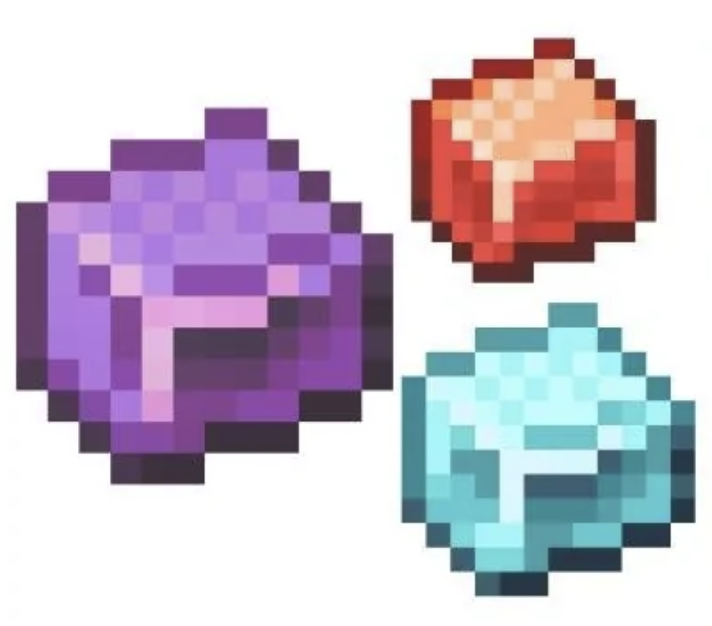
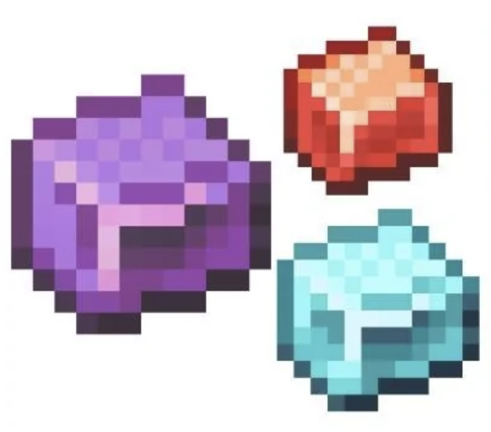

9Minecraft advocacy?
 src

src
src

src
Minecraft has been ruined with corporate bloat. I intend to save it.
Once I find out how, I will mod for 1.7.10, the best version of Minecraft (nostalgic, mostly good non-bloat features, and popular for modding).
[Forge mod template?] [Forge setup tutorial video?]
I think making friends over modding would be fun, since I like participating in the community. Each mod will probably have their own Github, given it's a big enough project to need that kind of version control.
I'm gonna make the Mo' Picks mod and add. dirt pickaxe